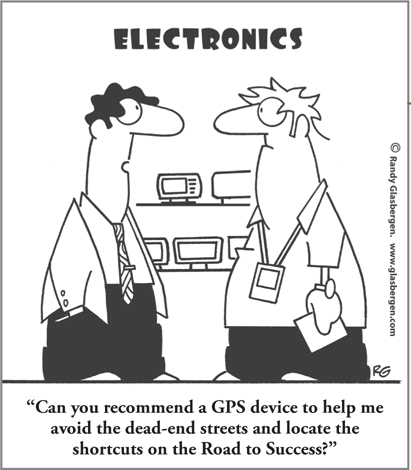

CHAPTER 1
Every Business Runs on Thinking

CHAPTER HIGHLIGHTS
 Because every business runs on its thinking, optimizing thinking is the key to better performance and better results.
Because every business runs on its thinking, optimizing thinking is the key to better performance and better results.
 The more we learn about the brain, the more relevant these concepts are to every aspect of your business, your own career, and your professional growth.
The more we learn about the brain, the more relevant these concepts are to every aspect of your business, your own career, and your professional growth.
 With Whole Brain® Thinking, your business will have an improvement process that does for people and the organization what Lean did for manufacturing and Agile did for technology.
With Whole Brain® Thinking, your business will have an improvement process that does for people and the organization what Lean did for manufacturing and Agile did for technology.
 More than 30 years of research stand behind the concepts, examples, and stories you will be reading about in this book.
More than 30 years of research stand behind the concepts, examples, and stories you will be reading about in this book.
My first full-scale research activities on brain function caused quite a stir at the GE Management Development Institute at Crotonville in the mid-1970s. Ironically, most people couldn’t see how the brain was connected with my professional work in management education. Compared to what we now know about the brain, we were pretty much in the Dark Ages. In addition, most business cultures were so steeped in analytical, logical, and safekeeping modes of thinking that they not only resisted the idea of “Whole Brain” Thinking, but also didn’t see why they needed to recognize, acknowledge, and apply the more interpersonal, imaginative styles of thinking that existed within their organizations but were often buried.
Whether it was explicitly articulated or not, the typical response that I seemed to be getting back then was some variation of a basic question: “So what?” So it’s probably fitting that each chapter in this book ends with a section entitled “So What?” Why does it matter that we have different preferences for different kinds of thinking? What does creative thinking have to do with business success? Why should I care about this when I need to make my numbers, deal with complex issues, rally people around a new mission and strategy, and keep people engaged and performing at their peak?
When it comes to running a business, so what?
The answer is simple: every business runs on thinking. If you want to continually improve and reach new heights in an increasingly complex world, you have to understand the impact of thinking and take advantage of all the thinking potential that you have. For my own company and for all businesses, a more conscious Whole Brain approach to business is a necessity, not an option, for these primary reasons:
If thinking is the fuel that drives business, we need to understand how the brain works in order to deal with change effectively. Are you dealing with the same kinds of problems, opportunities, and work environment that you faced five years ago? Or even a year ago? Change is happening so fast that it’s not uncommon for most businesspeople to be coming up against challenges and issues that have no precedent on an almost daily basis.
This level of change requires you to fully leverage all the mental muscle you have in order to move away from resistance and seek out new thinking. When you can engage the kind of specialized thinking that is more inclined to embrace novelty, you’ll be better able to make critical decisions after the facts have run out. To compete effectively in a world characterized by change, everyone has to be able to function using all of the brain’s different modes. This has never been truer than it is today.
Mentally diverse heterogeneous groups produce more creative, effective solutions than do similar-thinking homogeneous groups. This isn’t an altogether new thought. The saying “two heads are better than one” has been around for a while. We just didn’t have research to explain it or a way to measure it, manage it, and describe it, which is what the Whole Brain Thinking concept allows. We now have the research that demonstrates why we need all the diverse thinking in our organizations working together if we are to get the best results, particularly as the challenges we face keep getting more complex. The good news is that most organizations have those cognitive differences within their ranks; they just have to know where to seek them out and how best to leverage the diversity.
With greater thinking diversity comes a unique challenge: heterogeneous groups are often much harder to manage. Classic management approaches no longer apply—they’re too constricting, and therefore they’re usually counterproductive. To manage these diverse groups, leaders need to be more like translators than like traditional taskmasters. The upshot: if we’re going to tap the power of the Whole Brain team, we have to learn Whole Brain ways of managing.
Certain modes of thinking will increasingly dominate an organization as it matures unless the leadership applies Whole Brain Thinking to consciously cultivate and encourage the breadth of thinking that is necessary for ongoing success. We tend to hire, coach, promote, and otherwise reward in our own image. It’s natural to be drawn to those who think the way we do. It’s easy. We have our own shorthand. But if we limit ourselves in this way, we’re missing the other perspectives and mental frames of reference we need in order to solve complex problems and find more innovative solutions. All that single-mindedness will lead to stagnation or worse. In the face of increasing complexity and intense competition, companies won’t be able to survive over the long term if they don’t deliberately look for, develop, and leverage the full spectrum of thinking.
As you read this book, you’ll discover that the way you communicate, learn, make decisions, plan your work processes, choose your career, deal with customers, manage people, allocate attention, and handle every other aspect of your business performance is rooted in how you prefer to think. Imagine how much you’ll be able to accomplish—how much more productive, more focused, and more flexible you’ll be—once you understand and know how to use all your thinking to your advantage.
Every organization has a wealth of thinking diversity within it, but only those that know how to access and apply that diversity will fully benefit from it. The good news, as this book will show you, is you don’t have to be a neuroscientist to do it.
From improving mentoring at the U.S. Naval Command and developing the next generation of global leaders at IBM to creating a widely popular new video game at Microsoft Game Studio and coming up with killer marketing ideas at Brown-Forman, leading organizations around the world are applying the Whole Brain Thinking system to outthink, outpace, and outperform the competition. You’ll read many of their stories in these pages and learn what you can do to apply the same concepts to your challenges. Their examples are both a reminder and proof that no matter what kind of business you’re in, the most successful businesses run on Whole Brain Thinking.
With this book, you’ll have the background and the tools to start putting your own whole brain to work.
SO WHAT?
 Now more than ever, the brain has everything to do with business.
Now more than ever, the brain has everything to do with business.
 The brain is complex, but its application to business shouldn’t be; it should be relevant, practical, and easy to use.
The brain is complex, but its application to business shouldn’t be; it should be relevant, practical, and easy to use.
 By recognizing, adapting, and applying all the thinking resources available in your organization, you’ll be able to improve every aspect of business and performance.
By recognizing, adapting, and applying all the thinking resources available in your organization, you’ll be able to improve every aspect of business and performance.
 Because every business runs on thinking, the ones that can optimize that thinking will have a distinct competitive advantage.
Because every business runs on thinking, the ones that can optimize that thinking will have a distinct competitive advantage.